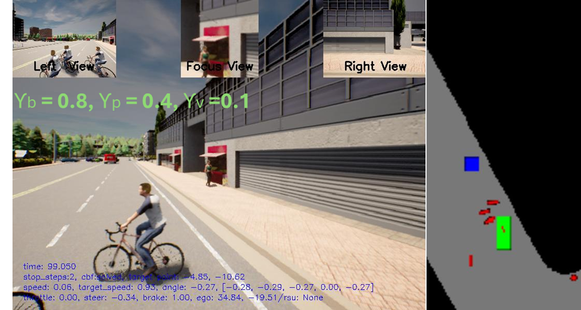
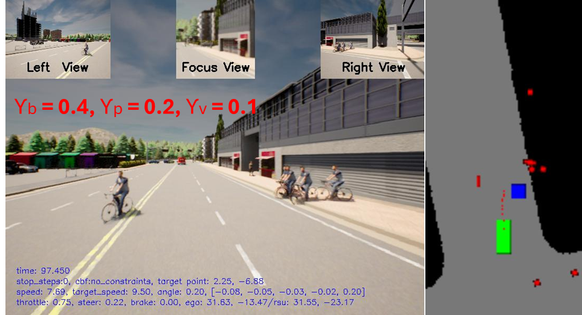
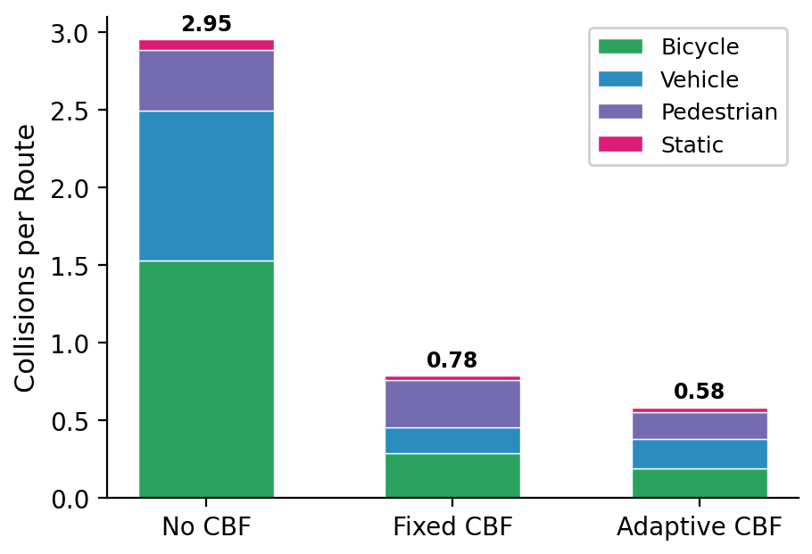
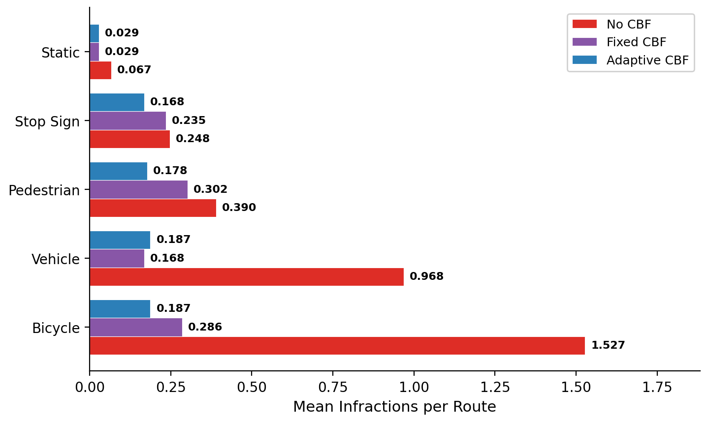
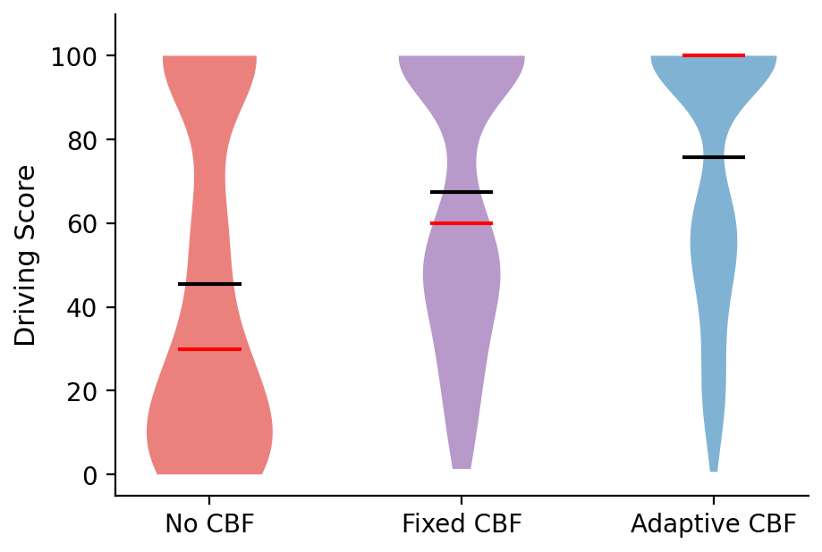

Master's thesis research
Learning Adaptive Control for Safe Collaborative Autonomous Driving
A lightweight safety adapter that learns class-specific Control Barrier Function gains for vehicles, pedestrians, and bicycles without retraining the upstream collaborative perception or planning stack.
Research problem
Adapt safety intervention to the traffic context
V2Xverse combines collaborative perception with learned planning, but its nominal controller cannot adapt its safety behavior to changing traffic. A fixed CBF gain creates one operating point: conservative settings can stall the vehicle, while permissive settings may react too late to hazards.
This work adds an RL-adaptive CBF between the nominal controller and the actuator. A compact policy selects separate barrier gains for vehicles, pedestrians, and bicycles; a quadratic program then modifies only longitudinal acceleration while keeping steering, perception, and planning unchanged.
Adaptive policy
Learn when each road-user class requires stronger intervention
The actor and critic use two 64-unit Tanh layers. The actor outputs three bounded gains from 0.05 to 0.8, one each for vehicles, pedestrians, and bicycles. Training uses constrained PPO with a PID-updated Lagrangian multiplier to balance route progress against a separate safety-cost budget.
- 11 observation features and 3 class-specific actions
- Proximity and time-to-collision safety costs
- 800,000 to 1 million on-policy environment steps
- Approximately 10,000 trainable policy parameters
Safety filter
Keep the learned policy behind an interpretable control layer
The policy does not directly control throttle or brake. It schedules barrier gains for an online CBF-QP that accounts for actor geometry, closing speed, stopping distance, and path relevance. OSQP returns the closest safe longitudinal command, with a nominal-control fallback if no relevant actor remains or the solver fails.
- Vehicle, pedestrian, bicycle, and static actor handling
- Path-aware gating for adjacent and crossing traffic
- Physical acceleration limits and soft feasibility slack
- 5 Hz control decisions in CARLA Town05
Closed-loop demonstration
Adaptive braking around vulnerable road users
The comparison shows the unfiltered controller colliding with an incoming bicycle, followed by the adaptive CBF changing gains as traffic risk evolves.

Evaluation
Safer routes without sacrificing completion
The evaluation covered 315 closed-loop trials across 105 Town05 routes with identical frozen perception, planning, and lateral control. Adaptive CBF was compared with PID-only control and a fixed-gain CBF.



Read the research and implementation
The thesis contains the full formulation, training protocol, evaluation metrics, and limitations. The repository contains the V2Xverse integration.